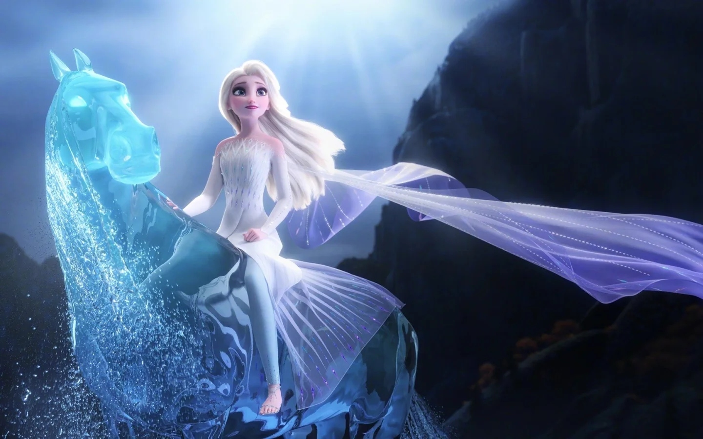

暗海是横亘在魔法森林以北、通往阿塔霍兰的辽阔水域，以极度凶险著称，几乎无法横渡；其设计参考了冰岛的黑石滩（Black Pebble Beach），与挪威的童话暖色调形成“明暗对照” （来源：Disney Wiki；horsingaroundinla.com 剧组访谈）。正是这道海，分隔了已知的阿伦黛尔世界与记忆冰川的秘境。

诺克（Nokk）是守护暗海的水之灵，以骏马之形现身，由纯粹的水构成 （来源：Disney Wiki；D23）。其形象源于北欧神话中的水灵（Nøkken / Näkki / Nøkke 等），本为可变形、能祝福或溺毙路人的水中精怪；片中则被定型为一匹写实、不卡通化的马，参考了布鲁克马（Bäckahäst）等北欧“水马”传说 （来源：SYFY Wire；The Mary Sue；Disney Animation SIGGRAPH 技术报告）。
导演将其设定为“暗海的守护者、一名战士”，只放行“配得上”的人通过，因而如同一匹未被驯服的野牡马 （来源：horsingaroundinla.com 动画总监 Svetla Radivoeva 访谈）。动画团队赴洛杉矶 Equestrian Center 实地观察马匹情绪姿态（耳朵后压表愤怒、放松时耷拉等），并将之与水流运动结合——马蹄踏水时碎裂、鬃毛如瀑布般飞溅 （来源：SYFY Wire；Disney Animation 技术报告）。艾莎初与之激战几乎溺亡，终以冰雪之力与之达成互惠的羁绊，诺克驮她渡过暗海；二者互致敬礼后，水灵没入平静的海面 （来源：Disney Wiki；Frozen II (2019)）。